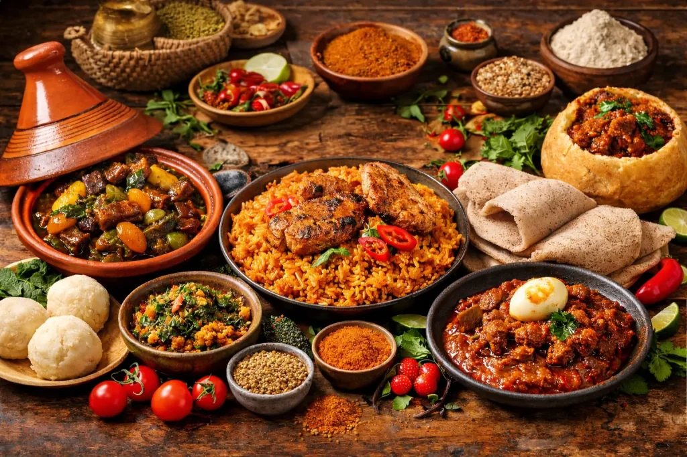
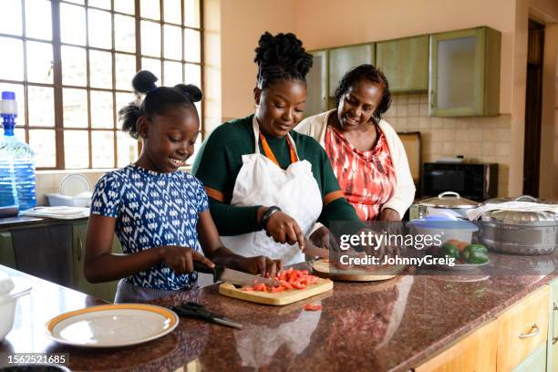

Kingsley Tasty-Time Cuisines

Welcome to Taste of Africa
Discover the Rich & Vibrant Flavors of African Cuisine
From the bold spices of West African Jollof to the aromatic stews of East Africa and the rich braais of the South, Africas culinary heritage is as diverse as the continent itself. Whether you are a beginner looking to master the basics or an experienced cook searching for authentic recipes, we are here to guide you on a delicious journey across Africa.

Explore Our Recipes
- West African Classics:** Perfect your Jollof rice, Egusi soup, and pounded yam.
- East African Delights:** Master soft-layered Chapati, Sukuma Wiki, and savory samosas.
- North African Tagines:** Slow-cook aromatic lamb and vegetable tagines with couscous.
- Southern African Feasts:** Fire up the grill for authentic Braai dishes and comforting Chakalaka.


Why Cook African Cuisine?
African food is built on wholesome ingredients, fresh herbs, and deeply layered spices. Our step-by-step guides, video tutorials, and ingredient substitute lists make these traditional meals accessible to kitchens anywhere in the world.
Get Started Browse Recipes